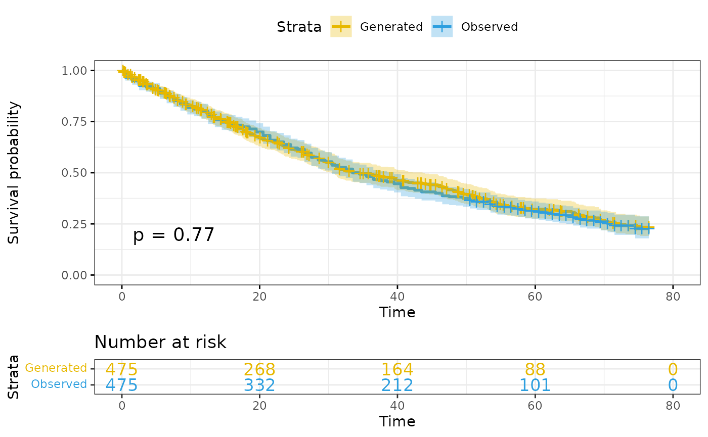
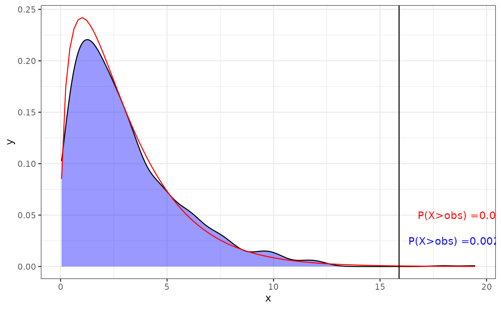

a02_Examples_Real_Data.RmdIn this section we demonstrate how to use “benchtm” package for reproducible data analysis using real clinical data. The package can generate outcomes based on user-specific covariates. This would allow users to perform simulation study using real data as inputs and validate existing findings. For example it allows to simulate data for the scenario under no treatment effect heterogeneity (no treatment by covariate interaction). The simulated data can then be analysed in the same way as the original data. This will allow to put potential finding on the original data into context (e.g. how consistent are analysis results with the hypothesis of no treatment by covariate interactions).
As demonstration, we will use data from Prostate cancer patients. The treatment consisted of a placebo group and three dose levels of diethyl stilbestrol. The placebo and the lowest dose level of diethyl stilbestrol were combined to give the control arm, and the higher doses were combined to give an active treatment arm. Of 506 patients randomized, only 475 with complete data are available on the dataset. Based on the analysis provided in Exploratory subgroup analysis in clinical trials by model selection, we only consider Bone metastasis (BM), History of cardiovascular disease (HX), and Age (AGE > 65) as covariates. The endpoint is survival time (SURVTIME) with censoring (CENS = 1:death; CENS = 0 censor). Treatment is recoded as RX.
library(benchtm)
library(dplyr)
library(survival)
library(haven)
## BM:Bone metastasis,
## HX:History of cardiovascular disease
## AGE:Age, years based on model;
## RX:treatment
## SURVTIME: survival time,
## CENS: 0 for censor and 1 for death
## reference https://onlinelibrary.wiley.com/doi/10.1002/bimj.201500147
dat <- read_sas("adv_prostate_ca.sas7bdat") %>%
## the SAS data in provided in https://onlinelibrary.wiley.com/action/downloadSupplement?doi=10.1002%2Fbimj.201500147&file=bimj1691-sup-0001-CodeData.zip
select(BM, HX, AGE, SURVTIME, CENS, RX) %>%
mutate(AGE_cat = 1*(AGE > 65))
head(dat)
#> # A tibble: 6 × 7
#> BM HX AGE SURVTIME CENS RX AGE_cat
#> <dbl> <dbl> <dbl> <dbl> <dbl> <dbl> <dbl>
#> 1 0 0 75 72.5 0 0 1
#> 2 0 1 69 40.5 1 1 1
#> 3 0 1 75 20.5 1 0 1
#> 4 0 0 67 65.5 0 0 1
#> 5 0 0 71 24.5 1 0 1
#> 6 0 0 75 46.5 1 0 1A survival model is fitted assuming exponential distribution. Model with and without interactions are conducted respectively.
## fit main model (just main/prognostic effects)
model.main = survreg(Surv(SURVTIME, CENS) ~ RX + BM + HX + AGE_cat, dist = "exponential",
data = dat)
summary(model.main)
#>
#> Call:
#> survreg(formula = Surv(SURVTIME, CENS) ~ RX + BM + HX + AGE_cat,
#> data = dat, dist = "exponential")
#> Value Std. Error z p
#> (Intercept) 4.376 0.161 27.22 < 2e-16
#> RX 0.193 0.112 1.73 0.084
#> BM -0.719 0.140 -5.15 2.7e-07
#> HX -0.465 0.110 -4.21 2.5e-05
#> AGE_cat -0.269 0.152 -1.76 0.078
#>
#> Scale fixed at 1
#>
#> Exponential distribution
#> Loglik(model)= -1644.3 Loglik(intercept only)= -1667
#> Chisq= 45.35 on 4 degrees of freedom, p= 3.4e-09
#> Number of Newton-Raphson Iterations: 4
#> n= 475
## model with interactions
model.inter = survreg(Surv(SURVTIME, CENS) ~ RX * (BM + HX + AGE_cat),
dist = "exponential",
data = dat)
summary(model.inter)
#>
#> Call:
#> survreg(formula = Surv(SURVTIME, CENS) ~ RX * (BM + HX + AGE_cat),
#> data = dat, dist = "exponential")
#> Value Std. Error z p
#> (Intercept) 4.030 0.189 21.29 < 2e-16
#> RX 0.897 0.309 2.90 0.0037
#> BM -1.083 0.199 -5.44 5.4e-08
#> HX -0.347 0.151 -2.30 0.0217
#> AGE_cat 0.130 0.193 0.67 0.5027
#> RX:BM 0.603 0.276 2.19 0.0288
#> RX:HX -0.268 0.220 -1.22 0.2242
#> RX:AGE_cat -0.810 0.315 -2.57 0.0100
#>
#> Scale fixed at 1
#>
#> Exponential distribution
#> Loglik(model)= -1636.8 Loglik(intercept only)= -1667
#> Chisq= 60.29 on 7 degrees of freedom, p= 1.3e-10
#> Number of Newton-Raphson Iterations: 4
#> n= 475From the main model, we can see that Bone metastasis (BM), History of cardiovascular disease (HX) are significant under exponential assumption, with interaction included, we can see that Bone metastasis (BM) and Age have significant interaction with treatment (P-value < 0.05). Based on the point estimates from the interaction model, we could use “benchtm” package to generate new outcomes based on the existing covariates in this dataset.
library(ggplot2)
# library(survminer)
# coefficients obtained from model.inter
prog_use <- " 1.0830 *BM + 0.347 *HX - 0.13*AGE_cat"
pred_use <- "-0.603 * BM + 0.27 * HX + 0.81 * AGE_cat"
b0_use <- -0.897
b1_use <- 1
lambda0 <- exp(-4.030)
max_surv <- max(dat$SURVTIME)
cens_time <- function(n){
tmp <- rexp(n, rate = 0.01)
sapply(tmp, function(x) min(x, max_surv))
}
set.seed(1)
dat_generate <- generate_y(X = dat %>% select(BM, HX, AGE_cat), trt = dat$RX,
prog = prog_use, pred = pred_use, b0 = b0_use, b1 = b1_use,
type = "survival", cens_time = cens_time, lambda0 = lambda0)
head(dat_generate)
#> trt BM HX AGE_cat Y event
#> 1 0 0 0 1 48.385650 1
#> 2 1 0 1 1 44.563077 1
#> 3 0 0 1 1 6.598488 1
#> 4 0 0 0 1 8.956895 1
#> 5 0 0 0 1 16.824969 0
#> 6 0 0 0 1 43.418168 0To check if the generated data is close to the real data, a Kaplan-Meier curve can be used to compare the survival probabilities.
dat_combine <- dat_generate %>% select(Y, event) %>%
rename(SURVTIME = Y, CENS = event) %>%
rbind(dat %>% select(SURVTIME, CENS)) %>%
cbind(cat = c(rep("Generated",dim(dat)[1]),rep("Observed",dim(dat)[1])))
## compare ovserved and generated survival time
fit <- survfit(Surv(SURVTIME, CENS) ~ cat, data = dat_combine)
survminer::ggsurvplot(fit, data = dat_combine, size = 1, palette = c("#E7B800", "#2E9FDF"),
conf.int = TRUE, pval = TRUE, risk.table = TRUE, risk.table.col = "strata",
legend.labs = c("Generated", "Observed"), risk.table.height = 0.25,
ggtheme = theme_bw()
)
We can see from the above plot that the generated survival times have very similar distribution compared to the observed survival times.
One can also conduct a parametric bootstrap test for existence of
treatment effect heterogeneity by calculating the log-likelihood ratio
under the model with and without interation. The null distribution of
this statistic can be simulated by simulating new data from the model
without treatment by covariate interactions (model
model,main above).
# loglikehood ratios from 100 datasets generated from null model
loglikratio_null <- sapply(1:1000, function(seed){
set.seed(seed)
# prog and pred are based on main model without interaction
dat_generate <- generate_y(X = dat %>% select(BM, HX, AGE_cat), trt = dat$RX,
prog = "0.719 *BM + 0.465 *HX +0.269*AGE_cat",
pred = "0", b0 = -0.193, b1 = 0,
type = "survival", cens_time = cens_time, lambda0 = exp(-4.376))
model.full <- coxph(Surv(Y, event) ~ trt * (BM + HX + AGE_cat), data = dat_generate)
model.null <- coxph(Surv(Y, event) ~ trt + BM + HX + AGE_cat, data = dat_generate)
(model.full$loglik - model.null$loglik)[2]*(2)
})
## loglikehood ratio for real data using cox model
model.null.obs = coxph(Surv(SURVTIME, CENS) ~ RX + BM + HX + AGE_cat, data = dat)
model.full.obs = coxph(Surv(SURVTIME, CENS) ~ RX * (BM + HX + AGE_cat), data = dat)
loglikratio_obs <- (model.full.obs$loglik - model.null.obs$loglik)[2]*2
result_anova <- anova(model.null.obs, model.full.obs)
## plot to show the difference
ggplot(data.frame(x = loglikratio_null), aes(x=x)) +
geom_density(alpha=.4, fill = "blue") +
stat_function(fun = dchisq, args = list(df = result_anova$Df[2]), color = "red") +
geom_vline(xintercept = loglikratio_obs, color = 'black') +
annotate(geom = 'text', x = loglikratio_obs, y = 0.025, color = 'blue',
label = paste0('P(X>obs) =',
sum(loglikratio_null > loglikratio_obs)/length(loglikratio_null)), hjust = -0.1) +
annotate(geom = 'text', x = loglikratio_obs, y = 0.05, color = 'red',
label = paste0('P(X>obs) =',
1-pchisq(loglikratio_obs, result_anova$Df[2])), hjust = -0.1) +
theme_bw() + theme(legend.position="bottom")
The blue area is the density of the log-likelihood ratios for the model with/without interaction under the data generated from main model. The red line is the density of the chi-squared distribution for the test of interaction v.s. main model from modeling observed data. It can be seen that the empirical density matches the theoretical density well. The black vertical line is the observed log-likelihood ratio for real data. In response to the generated data test, P-value = 0.002, which is similar to the chi-square test (P-value = 0.001), indicating the treatment effect heterogeneity exists(there is interaction effect).
While the procedure here illustrated the approach for a global test for treatment effect heterogeneity, also other statistics could be simulated, for example the treatment effect in an identified subgroup after an algorithmic subgroup search. This simulation approach may be a valuable tool for assessing the strength of evidence for a subgroup finding: One could assess for example how likely it is to find a subgroup with a particular treatment effect in the case of no treatment by covariate interaction.